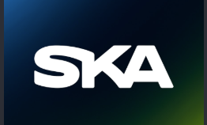
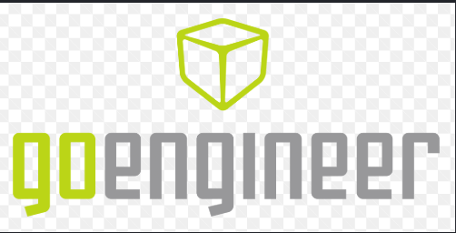

01
Integração
Fortalecer conexões entre colegas e aproximar diferentes equipes.
O grande encontro do futebol SKA acontece em 18 de dezembro de 2026, durante a festa da empresa. As partidas começam às 16h, com previsão de encerramento às 18h30. Inscreva sua equipe até 30/11.

+
Futebol, colaboração e pertencimento: um encontro entre os profissionais que fazem parte do nosso dia a dia.
A Champions League SKA 2026 é uma iniciativa de integração entre equipes, organizada em torno das áreas de atuação e dos produtos com os quais os colaboradores trabalham. Cada equipe representa seu núcleo, incentivando a convivência entre os setores, o respeito e o espírito esportivo.
Fortalecer conexões entre colegas e aproximar diferentes equipes.
Representar a própria área com comprometimento, colaboração e fair play.
Promover momentos de lazer, participação e reconhecimento esportivo.
Confira os critérios principais antes de montar o elenco. As regras complementares poderão ser consolidadas pela organização.
Os times devem ser formados por colaboradores da mesma área técnica e vinculados ao respectivo produto de atuação. É permitida a inclusão de somente 1 participante de outra área por equipe.
Somente atletas inscritos na equipe poderão representá-la. Não será permitido o empréstimo de jogadores de outras equipes, inclusive quando o time estiver com elenco reduzido.
Nas partidas em que for necessário definir um vencedor, o empate será decidido em disputa de pênaltis. Jogador expulso com cartão vermelho ficará suspenso, conforme definição da organização sobre a duração da penalidade.
O artilheiro será o atleta com maior número de gols marcados na competição e receberá um troféu individual.
O prêmio será concedido com base na menor média de gols sofridos durante o campeonato, conforme critérios de elegibilidade a serem divulgados.
Inscrições até 30 de novembro de 2026. O capitão deverá preencher o formulário oficial e pagar a taxa de R$ 100,00 por equipe. A inscrição só será confirmada após a validação do pagamento.
O valor arrecadado será utilizado para custear o aluguel do campo e as premiações. Após a cobertura dessas despesas, o saldo restante será destinado ao time campeão.
O campeonato começa às 16h e tem duração prevista de 2h30, com encerramento às 18h30. A programação será organizada para evitar atrasos devido ao tempo disponível.
O Copa Fácil será a plataforma de acompanhamento do torneio, com chaveamento, confrontos, classificação e resultados.
Relação de times inscritos e com pagamento confirmado.
Programação dos confrontos e horários, a divulgar pela organização.
Classificação, gols marcados e menor média de gols sofridos por goleiro.
Consulte o chaveamento e acompanhe o andamento da competição. Acesse a página oficial da Champions League SKA 2026 para consultar o chaveamento e acompanhar confrontos, classificação e resultados conforme forem publicados.
Visualização ilustrativa da fase eliminatória. O formato definitivo e a quantidade de confrontos serão divulgados após as inscrições.
* Fases exibidas apenas como exemplo. O chaveamento oficial poderá ser consultado na página do campeonato no Copa Fácil ↗ quando definido.
O campeonato será em 18 de dezembro de 2026, durante a festa da empresa. Início às 16h e encerramento previsto às 18h30 (2h30 de programação).
Espaço esportivo em Americana, São Paulo, escolhido para receber os jogos e a integração entre os participantes.
Entre em contato com os responsáveis para confirmar inscrições, obter orientações de pagamento e esclarecer dúvidas sobre a competição.
WhatsApp: (19) 99542-5129
Falar com Gustavo ↗WhatsApp: (19) 99380-0244
Falar com Otávio ↗Entre no grupo da Champions League SKA 2026 para acompanhar comunicados da organização, orientações e novidades da competição.
Entrar no grupo de WhatsApp ↗A inscrição custa R$ 100,00 por equipe. O capitão deve preencher o formulário e confirmar o pagamento para validar a participação.
Dia 18 de dezembro de 2026, no Na Cara do Gol Society, em Americana. Os jogos começam às 16h e o encerramento está previsto para 18h30.
Até 30 de novembro de 2026. A taxa é de R$ 100,00 por equipe, e a inscrição só será contabilizada após a confirmação do pagamento.
Para custear o campo e as premiações. O saldo restante, após o pagamento dessas despesas, será destinado ao time campeão.
O chaveamento oficial será disponibilizado na página da Champions League SKA 2026 no Copa Fácil ↗.
O capitão ou responsável pela equipe preenche o formulário oficial de inscrição.
Sim. Cada equipe pode incluir no máximo um colaborador de outra área, respeitando as demais regras.
Não. Empréstimos entre equipes não são permitidos.